Minacce
Una minaccia è un problema persistente che causerà guai ai PG se lasciato a sé stesso.
Quando ti accorgi o decidi che qualcosa – un PNG, un mostro, una situazione – diventerà un problema ricorrente o sempre più grave, probabilmente vale la pena di scriverlo come minaccia.
Scrivere le minacce non è strettamente necessario, ma rende tutto più facile da gestire man mano che il mondo della tua campagna si fa più complesso. Il tuo libretto del GM contiene pagine pensate apposta per aiutarti a tenere traccia delle minacce.
Non ogni PNG, mostro o situazione deve essere (o dovrebbe essere) una minaccia. I ragni giganti tra i PG e le antiche rovine degli Artefici? Se non peggioreranno col passare del tempo, probabilmente sono solo un pericolo da affrontare, se i PG vogliono esplorare le rovine.
In altre parole, non prenderti la briga di scrivere una minaccia a meno che tu non sappia che diventerà una faccenda seria.
Ecco un esempio di minaccia scritta per intero:
NIA (jolly)
Istinto di fare amicizia con i ragni
Ragazzina, toccata dai ragni dopo il suo calvario con la Madre-dei-Ragni.
Nipote di Blodwen; figlia di Cadoc (vedi Consiglio cittadino).
Nia è un esempio di PNG diventato una minaccia. Non è una malvagia e nemmeno un pericolo – è una bambina, la nipote di Blodwen, qualcuno che i PG hanno salvato – ma il suo legame con la Madre-dei-Ragni ne fa una fonte di guai futuri. È una minaccia.
Ecco un altro esempio:
POLLICESPINO (entità magica)
Istinto di accaparrare
Abitava nella Tomba del Signore Verde.
Ha cercato di derubare i PG, ma l'hanno colto sul fatto. Li ha aiutati a uccidere Sajra.
Ha promesso a malincuore a Vahid di non tentare di derubarli, far loro del male o intrappolarli.
Brama la Gemma della Mente (Mindgem). Ha paura di Rhianna. Pensa che Caradoc sia un pollo da spennare. Blodwen gli è debitrice per il fiore che le ha dato.
Quando mandi a chiamare Pollicespino tramite spiriti, uccelli o bestie, di' quando e dove nel Bosco vorresti incontrarlo. All'ora e nel luogo stabiliti, tira +INT: con 10+, si presenta; con 7-9, si presenta, ma il GM sceglie 1:
- Si sente offeso dalla convocazione
- Ora sei in debito con lui
- Un debito che ha con te ora è saldato
Pollicespino (Thornthumb) era un mostro che i PG hanno incontrato in gioco. L'hanno catturato, si sono alleati con lui, sono stati traditi da lui e gli hanno strappato la promessa di lasciarli in pace. Ma è ancora là fuori, ed è il tipo che serba rancore.
È una minaccia.
E un ultimo esempio:
ANWEN (malvagia)
Istinto di mantenere l'ordine a ogni costo
Esiliata da Stonetop anni fa, dopo aver avvelenato della gente (i deboli) durante un inverno rigido (meno bocche da sfamare). Gestisce una taverna-bordello allo Scavo di Gordin (Gordin's Delve); ha le mani in pasta ovunque. Ropr (bestia, per mantenere il favore di Anwen) è il suo
braccio destro. Ha un debole per Iona (jolly, per vivere comodamente).
Mosse del GM:
- Trovare il punto debole di qualcuno
- Sacrificare qualcun altro per avanzare verso un obiettivo
- Far uccidere qualcuno
Anwen non è ancora comparsa in scena. È nata dalla risposta di un giocatore a «Chi è la persona peggiore che conosci allo Scavo di Gordin, e perché fa così paura?». Non è ancora un problema, ma i PG sono diretti allo Scavo di Gordin, e lì lo diventerà di sicuro. Lei e i suoi tirapiedi sono minacce.
Scrivere le minacce è un modo per seguire i fili in sospeso e i conflitti che covano sotto la cenere, il che ti aiuta a ritrarre un mondo ricco e misterioso.
Le minacce forniscono problemi ed esiti negativi da far piombare sui PG, rendendo più facile costellare le loro vite di avventure. E la scheda di una minaccia rende più facile ritrarla con integrità, aiutandoti a giocare per scoprire cosa succede.
Quando scrivere le minacce
Le minacce sono preparazione: le scrivi tra una sessione e l'altra. Quando scrivi una minaccia, prendi decisioni reali e vincolanti che richiedono riflessione e cura.
Non farlo durante il gioco.
Nello specifico, dovresti scrivere le minacce…
Dopo le presentazioni
Rivedi i tuoi appunti della prima sessione Per iniziare, cercando i problemi stabiliti dai giocatori. Scrivili come minacce, con il livello di dettaglio che ti sembra sensato.
Durante le presentazioni, i giocatori mi hanno parlato di una recente razzia dei crinwin, dell'opprimente madre di Blodwen, Tegwen, e della Gemma della Mente. Li aggiungo ai registri delle minacce (come marmaglia, jolly, ed entità soprannaturale), ma aspetto a svilupparli finché non ne so di più.
Al Cambio di Stagione
La mossa Cambio di Stagione a volte ti dice di introdurre o aggravare una minaccia, o che le minacce abbondano. Questo può spingerti a creare una nuova minaccia, che i PG non hanno mai incontrato. Il tipo della minaccia, il suo istinto 2 Threat tracker e i suoi presagi funesti 5 Impending doom ti aiuteranno a dare corpo allo spunto di qualunque avventura collegata.
Vahid ha ottenuto 7-9 al primo Cambio di Stagione, il che significa che la loro prima avventura coinvolgerà una minaccia. Ho deciso che i crinwin sono caduti sotto l'influenza di uno swyn (un grosso serpente ipnotico dal muso di scimmia) e rapiscono bambini per arricchire la collezione dello swyn.
Lo swyn è la vera fonte del problema, quindi lo scrivo come minaccia (un malvagio).
Dopo una sessione
Se qualcuno ha introdotto un elemento (PNG, mostro, situazione, ecc.) durante una sessione, e potrebbe causare guai in seguito, scrivilo come minaccia finché ce l'hai ancora fresco in mente. O almeno prendine nota, e scrivilo per intero più avanti. Ti servirà da promemoria per riproporlo nelle sessioni future.
Dopo la loro prima avventura, i PG sono tornati a esplorare l'antica tomba e Blodwen ha disturbato lo spirito del Signore Verde mummificato che vi era sepolto. Anche se per lo più se ne sta nella sua beata vita ultraterrena costruita, potrebbe di certo causare guai ai PG in futuro.
La scrivo come minaccia (un'entità magica).
Quando prepari un'avventura
Quando sai e basta che una nuova minaccia sta per comparire, e hai già un'idea di come sarà, è una buona idea scriverla prima della sessione successiva. Può succedere quando i giocatori ti dicono che faranno X, e sai che fare X significa incontrare Y, e Y ha tutta l'aria di guai. Oppure quando chiudi una sessione con un colpo di scena in sospeso (come un tiro del fronte interno fallito, o qualcosa di spaventoso che si avvicina) e tra una sessione e l'altra decidi di introdurre una nuova minaccia.
Alla fine dell'ultima sessione, i PG (be', Vahid) hanno parlato di andare al Lago delle Tre Congreghe (Three Coven Lake) per trovare una parte del corpo della Gemma della Mente. Penso che sarebbe bello avere un gruppo del Popolo delle Colline votato a tenere la gente lontana dai laghi, e a tenere contenuti gli orrori dei laghi. Li chiamo la Mano Bianca e li scrivo come minaccia (un'istituzione).
Scrivere una minaccia
Per scrivere una minaccia, segui questi passi.
I passi più importanti vengono per primi; quelli successivi sono facoltativi.
1) Dai alla minaccia un nome e un tipo.
2) Aggiungila al registro delle minacce appropriato.
3) Dalle un istinto, se non ne ha già uno.
4) Scrivi una breve descrizione, comprese le minacce e i PNG collegati.
5) Se ha slancio: scrivi la sua rovina incombente e i suoi presagi funesti.
6) Facoltativo: scrivi qualche domanda sulla posta in gioco.
7) Facoltativo: scegli o scrivi delle mosse del GM per definirne meglio il comportamento e le capacità.
8) Facoltativo: scrivi delle mosse dei giocatori su misura.
1 Nome e tipo
Dai alla tua minaccia un nome semplice, che la distingua facilmente da qualunque altra minaccia che stai già seguendo.
Ogni minaccia ha anche un tipo, che ne descrive la natura fondamentale, il suo posto nel mondo e nella storia in corso. Esistono otto tipi di minaccia diversi, descritti nelle pagine seguenti.
Di solito sarà ovvio a quale tipo appartenga una nuova minaccia. Se non lo è, scorri le mosse di ciascun tipo e scegli quello che si adatta meglio.
I tipi di minaccia in gioco
Ogni tipo di minaccia è accompagnato da una serie di mosse del GM, che riflettono il modo in cui quel tipo di minaccia causa tipicamente guai. Puoi usare le mosse speciali di una minaccia ogni volta che la minaccia è coinvolta, in scena o fuori scena. Non sei limitato a quelle mosse – puoi, ovviamente, usare comunque tutte le tue mosse del GM standard come rivela una verità sgradita o mettili alle strette – ma le mosse della minaccia sono un'ottima ispirazione per il modo in cui quel tipo di minaccia agisce.
Per la nostra prima avventura, ho deciso che uno swyn si è stabilito in (o è emerso da?) alcune rovine degli Artefici (Makers) nel Gran Bosco (Great Wood). Ha portato i crinwin dei dintorni sotto il suo controllo ipnotico, e loro rapiscono bambini per la collezione dello swyn.
Gli swyn erano in origine creature dei Signori Verdi, i cui nomi hanno tutti un sapore slavo. Parto da «Tajra», lo ritocco un po', e scrivo «Sajra, lo Swyn» come suo nome.
Sajra lo Swyn è un grosso serpente ipnotico dalla testa di scimmia, narcisista, un collezionista dai gusti esigenti, capace di trasformare i deboli di volontà in servi adoranti. Guardando l'elenco dei tipi di minaccia, considero per un attimo di farne un'entità magica, ma non mi convince. No, è chiaramente un malvagio.
tipo di minaccia
Afflizione
Le afflizioni non sono persone, mostri o cose tangibili. Sono comportamenti, circostanze o condizioni che fanno soffrire la gente, la mettono in conflitto, o semplicemente la fanno preoccupare e angustiare.
Le afflizioni possono colpire solo un individuo o due (persino un PG specifico), un gruppo, una popolazione o addirittura un'intera regione.
 Mosse del GM per le afflizioni:
Mosse del GM per le afflizioni:
- Peggiorare o accelerare
- Diffondersi ad altri/trascinare dentro altri
- Mutare, assumere una nuova forma/un nuovo aspetto
- Consumare qualcosa/qualcuno
- Privare qualcuno dell'onore/della dignità
- Spingere qualcuno alla disperazione
- Giustificare l'egoismo, l'incuria
- Mettere zizzania tra le persone
- Causare illusioni, ostinazione, stoltezza
- Seminare panico o disperazione
- Provocare penurie, accaparramenti
- Suscitare violenza, odio, colpe
Esempi di afflizioni:
- Il vaiolo nero (Istinto di infettare e diffondersi)
- La faida di Braith con Thecla (Istinto di costringere la gente a schierarsi)
- La siccità (Istinto di esaurire le risorse)
- La contaminazione da argento vivo (Istinto di causare deliri)
- «Il posto di una donna» (Istinto di imporre limiti, a tutti)
- Il risentimento verso il Popolo delle Colline (Hillfolk) (Istinto di impedire la cooperazione)
- La tratta degli schiavi (Istinto di negare l'umanità) tipo di minaccia
Bestia
Le bestie sono mostri, animali o PNG mossi da bisogni e istinti elementari.
Il più delle volte, sono letteralmente bestie (naturali o meno). Potrebbero essere intelligenti, forse quanto o più della maggior parte delle persone, ma vanno in giro seguendo lo stomaco, i lombi o il loro grosso, stupido ego.
Una minaccia di tipo bestia può rappresentare una singola creatura specifica, una famiglia/un branco/una mandria, o persino un'intera specie.
 Mosse del GM per le bestie:
Mosse del GM per le bestie:
- Presentarsi dove non è gradita
- Braccare o inseguire una preda
- Proteggere la tana o la famiglia
- Dare prova di forza, di aggressività
- Costruire o ampliare un nido/una tana/un covo
- Modificare il proprio ambiente
- Fuggire, farsi prendere dal panico o dalla furia
- Divorare qualcosa (o qualcuno)
- Crescere o diminuire, in dimensioni o in numero
Esempi di bestie:
- Gli orsi delle caverne (Istinto di riempirsi la pancia, proteggere i piccoli)
- La mandria di bisonti, protetta da un patto con i PG (Istinto di agire impunemente)
- Grigor Spaccarocce (Istinto di assicurarsi che tutti sappiano quanto è grande)
- I frythranc (Istinto di dominare il proprio territorio)
- Lo sciame di nailadd (Istinto di riprodursi e diffondersi)
- Orub l'Hagr (Istinto di modellare compulsivamente il proprio ambiente) tipo di minaccia
Istituzione
Le istituzioni sono persone, gruppi o cariche che detengono potere all'interno di una comunità (o di più comunità). Possono essere entità formali, come un culto o un governo, o semplici posizioni di rispetto (come un consiglio degli anziani). Un'istituzione ha spesso un capo specifico, ma non sempre.
Un'istituzione trascende gli individui che la compongono, e il suo istinto riflette lo scopo o il comportamento dell'istituzione nel suo insieme. Ma agisce tramite individui, di solito persone che hanno interesse nel mantenerne l'influenza.
 Mosse del GM per le istituzioni:
Mosse del GM per le istituzioni:
- Influenzare l'opinione pubblica
- Rimettere qualcuno al suo posto
- Cambiare una regola, una legge o un'usanza
- Acquisire leve, risorse, influenza
- Denunciare qualcosa o qualcuno
- Sostenere una linea d'azione
- Reclutare nuovi membri o tirapiedi
- Litigare al proprio interno
- Cambiare guida
- Negoziare un accordo o un trattato
- Mandare qualcun altro a fare il lavoro sporco
Esempi di istituzioni:
- Il sacerdozio di Aratis (Istinto di preservare la civiltà, a ogni costo)
- Il Consiglio cittadino di Bordopalude (Marshedge) (Istinto di mantenere lo status quo)
- Il Culto di Azm Har (Istinto di accaparrarsi conoscenza, potere, persone)
- Il nascente consiglio cittadino (Istinto di tenere a freno i PG)
- L'Unione Ferrita (Istinto di minare il controllo dei Boss) tipo di minaccia
MacGuffin
I MacGuffin sono cose – oggetti, luoghi, persino segreti – che fomentano conflitti. Un MacGuffin può avere il potere di causare guai da sé, o può semplicemente essere qualcosa di prezioso per cui la gente si azzuffa.
Se nel tuo gioco c'è una cosa che ritieni fonte di guai, probabilmente è un MacGuffin.
Quando scegli l'istinto di un MacGuffin, concentrati su come causa guai piuttosto che su ciò che fa. La banderuola di eterio regola il tempo atmosferico, ma è una minaccia perché altri la bramano.
 Mosse del GM per i MacGuffin:
Mosse del GM per i MacGuffin:
- Rivelare un segreto
- Attirare l'attenzione su di sé
- Indicare qualcos'altro
- Generare invidia/paura/discordia
- Pesare, diventare un fardello
- Essere oggetto di furto
- Sparire
- Svolgere la propria funzione, incurante
- Fallire nel momento peggiore
- Lasciare il segno su qualcuno o qualcosa
- Diventare qualcosa di più grande, o di più piccolo
Esempi di MacGuffin:
- La cripta di artefatti della Cronaca (Istinto di custodire il male)
- L'Albero della Sapienza di Yevena (Istinto di rivelare segreti pericolosi)
- La Spada Temprata nel Sangue (Blood-quenched Sword) (Istinto di incoraggiare la violenza)
- La banderuola di eterio (Istinto di ispirare gelosia)
tipo di minaccia
Entità magica
Le entità magiche comprendono spiriti, molti
Fae, le Cose di Sotto (Things Below), persino gli dei o i loro agenti. Sono esseri che vivono e respirano magia e potere, per i quali le preoccupazioni mondane come il cibo e un riparo sono estranee o superflue.
Le entità magiche sono spesso vincolate da limiti e leggi strani, apparentemente arbitrari. Spesso devono agire sul mondo in modo sottile o tramite intermediari.
 Mosse del GM per le entità magiche:
Mosse del GM per le entità magiche:
- Spiare qualcuno, non visto/da lontano
- Percepire desideri/emozioni potenti
- Apparire per brevi istanti, in sogni, in visioni
- Offrire servigi, segreti, potere
- Pretendere un giuramento o un sacrificio
- Lanciare una maledizione
- Piegare un patto a proprio favore
- Mandare tirapiedi a eseguire i suoi ordini
- Plasmare i dintorni, secondo la propria natura
- Perseguire scopi alieni
- Alimentare rivalità con poteri simili
- Crescere o diminuire in forza
Esempi di entità magiche:
- Hec'tumel, Colui che Striscia! Serpente Pallido! La Morte È i Suoi Occhi! (Istinto di soffocare la vita, la speranza e la luce)
- La Madre-dei-Ragni (Istinto di vedere diffondersi i suoi molti figli)
- Lo spirito del falso idolo (Istinto di liberarsi dalla sua prigionia)
- Rossore-dell'Alba, la Fae (Istinto di essere adorata)
- L'ombra di Nikalor (Istinto di godersi i piaceri della carne)
- Yevena, Signore Verde mummificato (Istinto di preservare la sua gloriosa vita ultraterrena) tipo di minaccia
Marmaglia
Una marmaglia è un gruppo, con o senza un capo, unito da emozioni, sangue o circostanze anziché da un qualche scopo o obiettivo comune.
L'istinto di una marmaglia rappresenta il comportamento del gruppo nel suo insieme. Un singolo individuo all'interno del gruppo potrebbe non condividere l'istinto e persino opporvisi.
Mosse del GM per la marmaglia:
- Crescere o radunarsi in numero
- Rivendicare territorio o risorse
- Cadere sotto l'influenza di un (nuovo) capo
- Attraversare disordini interni
- Dare prova di forza/di numero
- Dichiarare un nemico o un'alleanza
- Rivoltarsi contro uno dei suoi
- Travolgere una posizione o un gruppo più debole
- Devastare, razziare, saccheggiare, incendiare
- Rifiutarsi di essere controllata/contenuta
- Disperdersi, sparpagliarsi, fuggire
Esempi di marmaglia:
- I profughi del Popolo delle Colline (Istinto di non integrarsi)
- La rivolta degli schiavi (Istinto di scrollarsi di dosso le catene)
- I banditi di Daedre la Rossa (Istinto di fare quel diavolo che gli pare)
- I Sette Fratelli, gozzovigliatori Fae (Istinto di trascinare altri nei loro eccessi sfrenati)
- La famiglia di Heledd (Istinto di serrare i ranghi e proteggere i propri)
- Il culto segreto del falso idolo (Istinto di perseguire potere, fortuna e rispetto) tipo di minaccia
Malvagio
I malvagi sono semplicemente il peggio. Sono individui con la spietatezza, la determinazione e il potere di rendere la vita un inferno a un numero qualsiasi di altre persone.
I malvagi agiscono spesso tramite tirapiedi o intermediari. Quando si coinvolgono di persona, cercano sempre di agire da una posizione di forza o di sicurezza personale.
Spesso hanno un piano di riserva, o due.
 Mosse del GM per i malvagi:
Mosse del GM per i malvagi:
- Afferrare il potere, sconsideratamente
- Guadagnare seguaci o alleati
- Trovare il punto debole di qualcuno
- Fare un'offerta, con condizioni nascoste
- Pretendere concessioni, obbedienza o rispetto
- Minacciare, velatamente o no
- Superare in astuzia i nemici
- Attaccare con cautela, tenendo delle riserve
- Attaccare spietatamente, con poco preavviso
- Rivelare preparativi fatti in anticipo
- Sacrificare qualcun altro per avanzare verso un obiettivo
- Tradire un alleato o una fiducia
- Fare un prigioniero
- Fare l'impensabile
Esempi di malvagi:
- Brennan (Istinto di mantenere o accrescere il suo potere)
- Marc, schiavista del Popolo delle Colline (Istinto di glorificare sé stesso e il suo clan)
- Iwan, poveraccio diventato stregone (Istinto di ottenere ciò che crede che il mondo gli debba)
- Il Crinwin Senz'Occhi (Istinto di liberare l'Oscurità Vivente)
- Mozairog Mente-in-Fiamme (Istinto di riportare i Fomoraij alla gloria) tipo di minaccia
Incognita
Le incognite sono individui che causano guai perché sono un mistero.
O perché i PG tengono a loro ma non possono fidarsene. O perché si oppongono ai PG, ma non sono necessariamente cattive persone. Se senti che un PNG è una minaccia, ma nessuno degli altri tipi di minaccia sembra adattarsi, rendilo un jolly.
Crea dei «triangoli» tra le incognite e i PG. Metti in risalto la vecchia amicizia tra il Duro ed Esylt, la ficcanaso del paese. Poi fai sì che Esylt mini l'autorità del Giudice, siediti e goditi le scintille.

Mosse del GM per le incognite:- Perseguire con aggressività il proprio istinto
- Mostrare il proprio valore, o la sua mancanza
- Mettere a nudo ciò che ha nel cuore
- Fornire consigli/aiuto, graditi o no
- Rivelare un segreto, o custodirne uno gelosamente
- Attirare l'attenzione su di sé/su altri
- Comparire senza preavviso
- Comportarsi in modo strano (per lei)
- Fare da testimone
- Raccontare storie (vere o no)
- Fare/mantenere/infrangere/pretendere una promessa
- Forzare una questione o uno scontro
- Restare risoluta e rifiutarsi di cedere
Esempi di incognite:
- Esylt, la ficcanaso del paese (Istinto di aggrapparsi a come le cose «dovrebbero» essere)
- Afon, Iniziata di Danu toccata dai Fae (Istinto di agire d'impulso)
- Andras (Istinto di cercare di fare colpo su Rhianna e Blodwen)
- Muirdoc, il bel ragazzo (Istinto di giocare con i cuori)
2 Registro delle minacce
Il tuo libretto del GM ha tre doppie pagine per seguire le minacce:
- Minacce del fronte interno, per PNG o gruppi che vivono in paese, per le afflizioni che li colpiscono direttamente, o per qualunque altra cosa si trovi lì.
- Minacce vicine, per le minacce che dimorano entro un paio di giorni di viaggio da casa.
- Minacce lontane, per tutto ciò che è più lontano.
Scegli il registro corrispondente. Aggiungi il nome della minaccia, magari un breve descrittore (ad es. «Sawyl, cacciatore scontento»), seguito dal suo tipo tra parentesi. Traccia una linea dal nome alla sua posizione sulla mappa del registro delle minacce.
Man mano che scrivi questa minaccia, potresti trovare utile aggiungere al registro i dettagli chiave (come il suo istinto o magari una domanda sulla posta in gioco). Tieni però le cose brevi e semplici. Non riuscirai a far entrare la scheda completa di ogni minaccia.
La tana di Sajra è una rovina degli Artefici a circa un giorno e mezzo dal paese nel Gran Bosco, quindi la aggiungo al registro delle Minacce vicine, sul lato destro. Scrivo «Sajra lo Swyn (malvagio)» e traccio una linea verso un punto plausibile del bosco.
3 Istinto
Ogni minaccia ha un istinto, scritto nel formato «di <fare qualcosa>».
È il comportamento principale che la rende un problema, che la porta a entrare in conflitto con gli altri o a nuocere loro. Se non avesse questo istinto, non sarebbe una minaccia.
Molti altri elementi di gioco (come i pericoli e alcuni PNG) avranno già un istinto assegnato. Se un elemento del genere diventa una minaccia a lungo termine, usa il suo istinto esistente oppure scrivine uno nuovo che rifletta come il suo comportamento tipico è cambiato o è diventato più problematico.
Se stai scrivendo una minaccia che non ha ancora un istinto (come una maledizione, o un PNG che ti sei appena inventato), decidi ora il suo istinto. Vedi le descrizioni di ciascun tipo di minaccia per degli esempi.
Qualunque istinto tu scelga, annotalo nei tuoi appunti, sotto il nome e il tipo della minaccia.
Se pensi che sia utile, e hai spazio, aggiungilo anche al registro delle minacce.
Secondo il bestiario, l'istinto di uno swyn è «di assecondare il proprio ego». È perfettamente orribile, e può portare a ogni sorta di comportamento malvagio (come collezionare bambini). Lo riuso come istinto di questa specifica minaccia.
Gli istinti in gioco
Usa l'istinto di una minaccia per guidarne il comportamento e le reazioni. Se non sei sicuro di cosa farebbe una minaccia, guarda il suo istinto. Falle fare quello.
Durante la preparazione, usa l'istinto di una minaccia per stabilire il tipo di guai che causa e per aiutarti a impostare gli spunti delle tue avventure.
4 Descrizione
Butta giù qualche appunto, includendo una parte o tutti i seguenti elementi, se ti sembrano importanti:
- Chi o che cosa è la minaccia.
- Come è diventata un problema per i PG, o come l'hanno incontrata per la prima volta.
- I suoi rapporti con PNG, mostri, luoghi d'interesse o altre minacce.
Questi appunti sono per te, quindi scrivi solo ciò che ti è utile, ciò che vuoi ricordarti in seguito. Non sprecare tempo o spazio per cose ovvie (per te).
A volte, mentre scrivi una minaccia, ti accorgerai che è composta da (o comanda) minacce minori. Quando succede, puoi...
- scrivere per intero quell'altra minaccia, come voce a sé sul registro delle minacce e nei tuoi appunti; oppure…
- scegliere un tipo e un istinto per la minaccia minore, e includerli (tra parentesi) nella descrizione della minaccia principale.
Mentre scrivi la descrizione di una minaccia, potresti individuare delle lacune – dettagli non ancora stabiliti. Quando noti una lacuna del genere, riempila subito (con ciò che ha senso) oppure scegli di lasciarla come lacuna da colmare durante il gioco.
So che Sajra è uno swyn, e so cos'è uno swyn, quindi non mi prendo la briga di metterlo nella sua descrizione. Annoto però che dimora in una vecchia rovina degli Artefici, che comanda i crinwin e che colleziona bambini (tra cui il nipote di Caradoc).
Mentre prendo appunti, mi accorgo di avere alcune lacune. Qual è la natura della rovina degli Artefici? Perché Sajra è diventato una minaccia PROPRIO ORA, quando non lo era solo pochi mesi fa? Quali altri bambini ha con sé?
Decido che ha già rapito uno o due altri bambini, ma chiederò ai giocatori chi è stato preso. Quanto alla rovina degli Artefici, mi piace molto l'idea che sia una tomba-mausoleo di uno dei Signori Verdi. Quindi, o Sajra era in stasi in quella tomba ed è stato liberato di recente, oppure si è appena trasferito lì da qualche luogo più addentro nel Bosco. Non riesco a immaginare un Signore Verde che scelga di passare l'eternità con una creatura così immonda e prepotente, quindi penso che Sajra debba essersi trasferito di recente. Il che solleva un'altra domanda: cosa l'ha spinto qui? Non sento il bisogno di rispondere per ora, quindi la lascio come lacuna.
Avevo già stabilito i crinwin
come minaccia (una marmaglia, istinto: di bramare)
rivedendo i miei appunti dopo la creazione dei personaggi. Sono però asserviti a Sajra, quindi non credo meritino una scheda completa (per ora).
A questo punto, la mia scheda è questa:
SAJRA LO SWYN (malvagio)
ISTINTO di assecondare il proprio ego
Da poco si è stabilito in una tomba diroccata di un Signore Verde, a circa 1 giorno e mezzo dal paese (da dove viene?). Ha soggiogato alcuni nidi di crinwin (marmaglia; di bramare); rapiscono bambini per lui.
Tiene Wynfor (il nipote di Caradoc) e un altro bambino (chi?).
5 Rovina incombente
Se la minaccia ha slancio – se sta cambiando, persegue un piano o sta peggiorando – allora chiediti: quale cosa terribile e irrevocabile accadrà se procede indisturbata? Quella è la sua rovina incombente.
Una rovina incombente non deve per forza sconvolgere il mondo o essere terribile. Può essere meschina come «Elios lascia Dilwen, e Dilwen non perdona mai Rhianna».
Certo, una rovina incombente può sconvolgere il mondo ed essere terribile: «I Fomoraij insorgono e muovono guerra ai Fae». Oppure: «Il Passo della Barriera (Barrier Pass) cade e le orde dilagano a sud».
La cosa fondamentale di una rovina incombente è che è irreversibile. Una volta accaduta, non si torna indietro. Cambierà in modo profondo la minaccia e le cose su cui influisce.
I PG potrebbero convincere Elios a tornare, ma ormai il rapporto è spezzato e Dilwen continua a non perdonare Rhianna. Potrebbero porre fine alla guerra tra Fomoraij e Fae, ma il Gran Bosco è comunque stato devastato dal conflitto.
Non pensarci troppo! Chiediti solo: «Dove sta andando a parare?» e scrivilo. Se non ti viene in mente nulla, va bene! Non tutte le minacce hanno una rovina incombente. Se una sventura ti viene in mente più tardi, puoi sempre tornare ad aggiungerla alla minaccia.
Sajra è appena arrivato nella zona, e sta radunando servi (i crinwin) e collezionando bambini. È mosso dal suo terribile ego, e vuole essere adorato. Se lasciato indisturbato, alla fine Sajra cercherà di prendere il controllo di Stonetop. E se i PG non lo fermano, Sajra ci riuscirà. Quindi la sua rovina incombente è: «Sottomette la gente di Stonetop».
Presagi funesti
Una volta stabilito che una minaccia ha una rovina incombente, e quale sia, inventa 2-4 presagi funesti. Sono tappe, passi lungo la strada che mostreranno i progressi della minaccia. I presagi funesti dovrebbero essere cose concrete e osservabili: cose che i PG possono vedere, di cui possono venire a sapere o di cui possono subire gli effetti. E – cosa cruciale – i presagi funesti dovrebbero essere qualcosa a cui i PG possono reagire e che possono forse impedire.
Tanto per essere chiari: i presagi funesti sono cose che accadono nel mondo attorno ai PG.
NON sono cose che fanno i PG.
«Alcuni paesani formano un culto» è un solido presagio funesto; «i PG scoprono chi sono i cultisti» non lo è. Presuppone che i PG si interessino abbastanza da indagare sul culto, che indaghino e che ci riescano. Quello non è un presagio funesto – è un binario.
Allo stesso modo, un presagio funesto può essere un evento che coinvolge i PG, ma non dovrebbe mai imporre un esito. «I cultisti attaccano i PG nelle loro case» va benissimo. Puoi tranquillamente dare per scontato che prima o poi i PG saranno a casa, e chissà come andrà l'attacco? «I cultisti catturano i PG» non va bene, perché presuppone che i cultisti riescano a catturarli. Di nuovo, è un binario.
Scrivere i presagi funesti
Se fai fatica a inventare dei presagi funesti, guarda le mosse del GM del tipo di minaccia. Se la minaccia è un mostro o un seguace, guarda anche le sue mosse. Quelle mosse rappresentano ciò che fa la minaccia e come causa guai. Usale – insieme all'istinto della minaccia – per ispirare i tuoi presagi funesti.
Ecco un altro trucco: lavora a ritroso. Parti dalla rovina incombente e chiediti: «Quale evento distinto e osservabile accadrebbe subito prima di questo? Come apparirebbe la situazione?». Quello diventa l'ultimo presagio funesto. Poi, cosa accadrebbe prima di quello? Ecco un altro presagio funesto.
Continua a lavorare a ritroso finché non hai un presagio funesto visibile dallo stato attuale delle cose.
Mentre scrivi i presagi funesti, probabilmente ti ritroverai a cambiare idea e magari persino a riscrivere la rovina incombente. Va bene! Ma cerca di mantenere le cose flessibili; uno schema generale è molto più utile e adattabile di un piano dettagliato.
Sventure e presagi in gioco
I presagi funesti e le sventure incombenti sono i tuoi piani. Sono ciò che accadrà a meno che i PG non intervengano.
Una delle tue mosse del GM di base è avanza verso la rovina incombente. Guarda i presagi funesti di una delle tue minacce, spunta il prossimo e mostra ai PG qualche segno che si è verificato o si sta verificando.
Potresti fare questa mossa quando…
- c'è il Cambio di Stagione, e dal tiro risulta che una minaccia peggiora o che le minacce abbondano. Nella sessione successiva, o durante una scena imminente, mostra loro che un presagio funesto o una sventura si è avverato.
- i giocatori ottengono 6- e questa è la mossa dura che vuoi fare. Lo farai spesso per le mosse fatte durante il gioco libero Condurre il gioco, ma non sempre.
- i PG sono stati lontani dalla zona in cui una minaccia è attiva, e poi tornano in quella zona. Mostra loro come le cose sono peggiorate.
Il primo presagio funesto per Sajra mi è ovvio: spariscono altri bambini! Ma non sono proprio sicuro di cosa venga dopo. Quali sono i passi tra «far raccogliere bambini ai crinwin» e «Sajra sottomette Stonetop»?
Lavorando a ritroso: cosa accadrebbe subito prima che il paese venga sottomesso?
Guardando le mosse del GM per i malvagi, vedo pretendere concessioni, obbedienza o rispetto e penso: darebbe al paese un ultimatum! Accettarlo come loro padrone, perfino come loro dio, o essere distrutti. Questo è in linea con il suo istinto (di assecondare il proprio ego). Può trasformare i deboli di volontà in servi adoranti (una delle sue mosse da mostro) ma vuole che il grosso del paese riconosca la sua bellezza e la sua magnificenza e lo serva di buon grado. Bene, cosa farebbe prima di lanciare un simile ultimatum? Cercherebbe di guadagnare seguaci o alleati in paese. Come ci riuscirebbe? Magari trovando il punto debole di qualcuno e poi facendo un'offerta, con condizioni nascoste. Ma come? I malvagi di solito agiscono tramite tirapiedi o intermediari... i bambini! Rimanderà a casa alcuni dei bambini rapiti, completamente sotto la sua influenza, e farà loro spiare e reclutare seguaci.
Questo mi dà i seguenti presagi funesti e la rovina incombente:
O Spariscono altri bambini
O Alcuni dei bambini (in trance) tornano
O I bambini reclutano seguaci
O Si rivela, pretende sottomissione
O SVENTURA INCOMBENTE: Sottomette il paese, uccidendo o ipnotizzando qualunque oppositore
6 Posta in gioco (facoltativo)
Poniti qualche domanda sulla minaccia e sulle persone che ne sono colpite.
Che cosa ti incuriosisce? Che cosa vuoi scoprire in gioco? Queste domande diventano la tua posta in gioco.
Puoi porre domande sulla posta in gioco riguardo a PG o PNG, a gruppi, luoghi o cose.
Possono riguardare cose grandi, o piccole cose personali. Qualunque cosa chiedi, deve stuzzicare il tuo interesse e la risposta deve incuriosirti sinceramente.
Le domande sulla posta in gioco devono riguardare il futuro, non il passato. Che cosa accadrà, non che cosa è accaduto. Potresti avere domande sul passato da chiarire in seguito, tra le sessioni o durante il gioco, ma quelle non sono posta in gioco.
Alcuni esempi di buone domande sulla posta in gioco:
- Vahid convincerà Eira a fidarsi di lui?
- Elios si mostrerà all'altezza?
- Con chi finirà Mabyn?
- Chi morirà nella battaglia imminente?
- Tiwlip ritroverà il suo cane scomparso?
- Gli Artigli accetteranno l'autorità di Kiran?
- Ergben può essere redento?
Le domande sulla posta in gioco non dovrebbero ridursi a «Questo presagio funesto/questa rovina incombente si avvererà?». A questo hai già risposto! Un presagio funesto o una rovina incombente si avvererà a meno che i PG non lo impediscano. Chiedi di cose incerte, che non sono state decise.
Non ogni minaccia ha bisogno di una posta in gioco. Quando introduci una minaccia per la prima volta, potresti non saperne (o non importartene) abbastanza da porre domande. Va bene così! Puoi aggiungere domande sulla posta in gioco più avanti, man mano che la minaccia evolve o che ti ci appassioni. Oppure una minaccia potrebbe non sviluppare mai una posta in gioco. Va bene anche questo.
Riguardo a Sajra lo Swyn, mi chiedo:
* I genitori di Brynfor perdoneranno
Caradoc?
* Che ne sarà dei bambini rapiti, quelli finiti sotto il
controllo di Sajra?
* Cosa ha spinto Sajra a stabilirsi nella tomba del Signore Verde, in fin dei conti?
Quest'ultima, però, non è una domanda sulla posta in gioco – è un dettaglio del passato. Aggiungo le prime due alla scheda della minaccia come posta in gioco, e aggiungo alla descrizione una domanda sul perché Sajra sia arrivato.
La posta in gioco durante il gioco
Rendendo qualcosa una domanda sulla posta in gioco, decidi di non rispondervi tu stesso.
Invece, rinunci alla responsabilità, lasciandoti sorprendere da come andranno le cose. Ecco come si fa.
Prima di tutto: porta la posta in gioco in scena! Se ti chiedi se il legame di Nia con i ragni possa essere spezzato, fai comparire la madre di Nia alla porta della Benedetta a supplicarla di «curare» sua figlia.
Poi, fai una parte o tutte le cose seguenti:
- Mettila nelle mani dei PG. Di' loro le conseguenze o i requisiti, e guarda cosa ne fanno.
- Interpreta i PNG con integrità. Se una domanda sulla posta in gioco si riduce a «cosa farebbe questo PNG?», basa la risposta sull'istinto del PNG, sulle sue azioni e relazioni passate, sulla tua idea di chi sia davvero questa persona. Sì, la decisione la prendi tu, ma la basi su come agirebbe il PNG, anziché su come vuoi che vada la storia.
- Segui le mosse e i dadi. Se i PG innescano una mossa, e quella mossa può rispondere a una domanda sulla posta in gioco (o avvicinarti a una risposta), lascia che accada. Fai la mossa ovvia, quella che porta verso una risposta.
- Lasciala cuocere. Se porti in scena una domanda sulla posta in gioco e non viene risolta, va bene andare avanti e lasciarla senza risposta. Non forzarla. Torna su di essa più tardi, quando ha senso.
Ed eccoci, la sorella di Blodwen alla sua porta, che la supplica di «curare» Nia dal suo legame con i ragni. Mi chiedo come andrà a finire!
Comincio mettendola nelle mani del PG. «Blodwen, potresti provare a Succhiare il Veleno. Potrebbe purificare il legame di Nia con i ragni, ma… sarebbe come se qualcuno ti togliesse la Lingua degli Spiriti. Cosa fai?»
Blodwen è disposta a provare, ma non senza il consenso di Nia. Segue la sorella a casa e trova Nia in un angolo, a giocare a ripiglino con un ragno, sotto lo sguardo torvo del suo grosso papà burbero. Blodwen spiega a Nia che tutta questa faccenda dei ragni sconvolge i suoi genitori, che il legame si può spezzare ma lei non lo farà senza il permesso di Nia.
L'istinto di Nia è «di fare amicizia con i ragni», e penso che le piaccia giocare con loro. Quindi interpreto il mio PNG con integrità e dico «Ma non voglio perdere i miei amici», tutta dolce e innocente. «Sua madre singhiozza e suo padre si commuove e si morde un dito.»
Penso che la questione sia chiusa, ma Blodwen insiste. «La tua mamma e il tuo papà hanno paura dei ragni, Nia, tanta paura. E li rende tristi e spaventati quando parli con loro. Sei sicura di non volerci ripensare?»
Lo scopo di questo processo – scrivere una posta in gioco che ti interessa, portarla in scena e lasciare che i PG, i tuoi PNG e i dadi la risolvano naturalmente – è rendere il gioco più appagante per te. È una ricompensa che fai a te stesso, dire «Mi chiedo, riusciranno a spezzare il legame di Nia con i ragni?» e poi lasciarti sorprendere dalla risposta.
Blodwen sta Persuadendo, quindi seguo le mosse e i dadi. Ottiene 7. Devo rivelare come si potrebbe convincere Nia, ma sarà complicato, costoso o sgradevole. «Lei non vuole, ma da come i suoi occhi corrono al papà, sei sicura che se fosse LUI a dirle quanto è preoccupato e spaventato, lei acconsentirebbe. Buona fortuna. Cosa fai?»
Blodwen prende da parte i genitori, sussurrando che dovrebbero essere sinceri con Nia, dirle quanto hanno paura e quanto tengono a lei, con gli occhi sul padre di Nia per tutto il tempo. Sta di nuovo Persuadendo, ma ottiene 5. Il padre di Nia perde le staffe, comincia a urlarle contro, ordinandole di acconsentire. La bambina scoppia a piangere e corre fuori di casa e va a nascondersi in qualche posto buio (probabilmente pieno di ragni).
Non ho ancora risposto alla domanda in modo decisivo («il legame può essere spezzato?»), ma non avrà risposta adesso. Decido di lasciarla cuocere e risponderemo alla domanda più avanti.
7 Mosse del GM (facoltativo)
Se vuoi definire meglio come si comporta la minaccia o di cosa è capace, scegli o scrivi 2-4 mosse del GM.
Comincia guardando le mosse del GM del tipo della minaccia (I tipi di minaccia in gioco). Se qualcuna ti sembra particolarmente adatta a questa minaccia, aggiungila alla sua scheda. Allo stesso modo, se la minaccia è anche un mostro, individua le mosse da mostro che ti aiutano a capire come causa guai nel tempo, e aggiungile alla scheda.
Infine, chiediti se c'è qualcosa che pensi che questa minaccia possa fare o farà e che non è chiaramente definito, e che vuoi ricordarti o concederti il permesso di fare. Scrivilo come mossa del GM, in modo che completi la frase: «la minaccia può/farà __».
8 Mosse dei giocatori (facoltativo)
A volte una minaccia suggerirà una mossa unica rivolta ai giocatori, che si innesca solo interagendo con la minaccia, i suoi tirapiedi o il suo dominio. Per esempio: «Quando rimuovi un vaso canopo dal sarcofago, tira +CHA…».
Se una minaccia è anche un mostro, un rischio, un artefatto o un arcano, potrebbe già avere delle mosse rivolte ai giocatori associate. Aggiungi queste mosse (o un promemoria su di esse) ai tuoi appunti, se pensi che sia utile.
Non ogni minaccia richiede mosse su misura. Non prenderti la briga di scriverne una a meno che non aggiunga valore.
Vedi il capitolo Scrivere mosse e lettere d'amore Scrivere mosse e lettere d'amore per indicazioni su come scrivere mosse su misura rivolte ai giocatori.
In quanto mostro, Sajra ha già delle mosse del GM e persino una mossa rivolta ai giocatori per «Quando lo swyn ti costringe ad agire contro la tua volontà…». La maggior parte sarà rilevante solo quando i PG affronteranno Sajra direttamente, e a quel punto avrò a portata di mano le sue statistiche da mostro. Ma un paio delle sue mosse del GM descrivono le sue capacità come minaccia di ampio respiro, quindi le aggiungo alla mia scheda. Ora la mia minaccia è questa:
SAJRA LO SWYN (malvagio)
ISTINTO di assecondare il proprio ego
Da poco si è stabilito in una tomba diroccata di un Signore Verde, a circa 1 giorno e mezzo dal paese (da dove viene?). Ha soggiogato alcuni nidi di crinwin (marmaglia; di bramare); rapiscono bambini per lui.
Tiene Wynfor (il nipote di Caradoc) e un altro bambino (chi?).
O Spariscono altri bambini
O Alcuni dei bambini (in trance) tornano
O I bambini reclutano seguaci
O Si rivela, pretende sottomissione
O SVENTURA INCOMBENTE: Sottomette il paese, uccidendo o ipnotizzando qualunque oppositore
POSTA IN GIOCO: I genitori di Wynfor perdoneranno
Caradoc? Che ne sarà dei bambini rapiti finiti sotto il controllo di Sajra?
Mosse del GM:
> Instillare un suggerimento nella mente altrui
> Trasformare i deboli di volontà in servi adoranti
Esempi di minacce
Le minacce qui e nelle pagine seguenti sono altri esempi. Queste minacce potrebbero non esistere nel tuo gioco, e se esistono, potrebbero apparire molto diverse. Usale come ispirazione, niente di più.
TEGWEN (jolly)
Istinto di sminuire il valore altrui
La madre di Blodwen, gelosa della sua importanza per il villaggio e del suo rapporto con Gwendyl e Seren.
Risente di Rhianna. Diffida di Vahid.
Pensa che Caradoc sia uno sciocco.
Posta in gioco: Fin dove si spingerà per controllare Blodwen? Quanto a lungo
Blodwen la sopporterà?
Mosse del GM:
- Fornire consigli o aiuto (non richiesti?)
- Forzare una questione o uno scontro
- Brandire il senso di colpa come un'arma
LA FERITA DI GARET (afflizione)
Istinto di tenere Garet in pericolo
La gamba di Garet è stata dilaniata da draghi piumati; Blodwen l'ha rattoppato ma lui continua a caricarci il peso. Potrebbe mettersi male.
Posta in gioco: Quali decisioni prenderà Rhianna? Come la affronterà Blodwen?
MUTRA IL DENTE (malvagio)
Istinto di accaparrare
Un boss dello Scavo di Gordin. Le sue squadre scavano e recuperano artefatti. Ha comprato roba dei Signori Verdi da Vahid e Rhianna; vuole saperne/procurarsene di più.
Mosse del GM:
- Interrompere i commerci con lo Scavo di Gordin
- Mettere vecchi alleati contro Stonetop
CRINWIN (marmaglia)
Istinto di bramare l'umanità
Liberi dal controllo di Sajra, diventeranno ancora più ossessionati da Stonetop.
Quando Schieri la milizia del villaggio contro le razzie dei crinwin, aggiungi questo all'elenco delle scelte con 7-9:
- I crinwin rubano Eccedenza
- Sparisce un oggetto importante
IL CRINWIN PALLIDO (jolly)
Istinto di imparare sempre di più
Un crinwin curioso e «amichevole», in parte esiliato dai suoi simili. Vahid ha comunicato con «lui», più o meno. È affascinato dalla scrittura, dai disegni.
Posta in gioco: I PG capiranno come comunicare in modo affidabile con «lui»?
Gli abitanti del villaggio accetteranno i crinwin come qualcosa di diverso da parassiti o mostri?
Quando cerchi di comunicare con il crinwin pallido tramite versi o pantomime, descrivi cosa stai cercando di trasmettere e tira +INT: con 10+, messaggio ricevuto; con 7-9, coglie il senso ma non i dettagli; con 6-, accidenti se capisce male.
SCIAME DI NAILADD (bestie)
Istinto di riprodursi e diffondersi.
Ragni giganti, che si diffondono attraverso le pietre miliari su ordine della Madre-dei-Ragni.
Posta in gioco: Blodwen troverà la forza di aiutare a ucciderli? Andras supererà la sua paura dei ragni?
GILDA DEI CONTADINI (marmaglia)
Istinto di migliorare la propria condizione
Idealisti guidati da Dermos e Tierney, forse 100 sostenitori. Per cominciare vogliono un seggio nel consiglio cittadino di Bordopalude.
Posta in gioco: Dermos e Brin si metteranno insieme? Kiran seguirà gli ordini o la sua coscienza?
IL CONSIGLIO DI BORDOPALUDE
(istituzione)
Istinto di preservare lo status quo.
Il capo di ogni gilda (compresi i camminapalude) e un rappresentante di ciascuna delle Antiche Famiglie. Brennan non siede nel consiglio, ma di certo lo influenza.
Mosse del GM:
- Tagliare a Stonetop la fornitura di qualcosa
- Temporeggiare, bisticciare, rifiutarsi di decidere
LA MANO BIANCA (istituzione)
Istinto di contenere il male dei laghi, costi quel che costi
Una setta sacra del Popolo delle Colline che pattuglia le Terre a Gradoni (Steplands).
Posta in gioco: Come reagiranno i PG a loro, se scopriranno il loro scopo?
Mosse del GM:
- Denunciare gli intrusi come impuri
- Percepire la macchia della corruzione
- Spargere la voce tra il Popolo delle Colline
- Superare in astuzia la loro preda
IL CUORE DELLA GEMMA DELLA MENTE
(MacGuffin)
Istinto di potenziare, accendere, risvegliare
Un frammento di vetro degli Artefici che arde di un calore terribile, recuperato dal Lago delle Tre Congreghe. Attualmente custodito nel focolare di Vahid.
Posta in gioco: Che cosa farà Vahid con il Cuore? Come reagirà Maire alla sua presenza in casa di Vahid?
Mosse del GM:
- Svolgere la propria funzione, incurante
- Attirare l'attenzione su di sé
- Dare fuoco a qualcosa
- Fornire una potente riserva di energia magica
EMBARGO COMMERCIALE (afflizione)
Istinto di punire Stonetop
Dopo che i PG si sono schierati con la Gilda dei Contadini, Brennan ha fatto tagliare al consiglio i commerci con Stonetop.
Quando ti Equipaggi da Stonetop, inizi con 1 oggetto piccolo in meno del normale, e le scorte hanno ciascuna 1 uso in meno.
Quando ti Riprendi usando scorte di Stonetop, tu o il tuo paziente recuperate 1 HP in meno del normale.
Quando Commerci e Baratti per qualunque cosa che debba passare da Bordopalude, hai svantaggio.
LA PRESENZA OSCURA
(entità magica)
Istinto di divorare la vita, la luce, il calore
Lo spettro di un Signore Verde. Imprigionato sotto quel tumulo che i PG hanno trovato vicino alla ziggurat dei ragni. Ha assaggiato il sangue di Caradoc, perciò lui è legato a esso.
Risvegliato dal Cuore della Gemma della Mente.
Posta in gioco: In che modo il suo legame con Caradoc influirà su ciò che accade?
Aggiornare le minacce
Le minacce cambiano nel tempo. Tra una sessione e l'altra, rivedi le tue minacce e aggiornale come serve. Per ogni minaccia, se…
- non è più una minaccia (perché è morta, se n'è andata, il conflitto è stato risolto, ecc.), allora cancellala dal registro delle minacce;
- il suo tipo di minaccia non suona più vero (perché ti eri sbagliato, o perché la sua natura è cambiata), allora scegline uno nuovo;
- il suo istinto non suona più vero o è cambiato, allora rivedilo;
- c'è qualcosa di nuovo che vuoi ricordare, allora aggiungilo alla sua descrizione;
- uno qualunque dei suoi presagi funesti si è avverato, allora spuntalo;
- i PG l'hanno sventata o ne hanno cambiato il corso, allora aggiorna di conseguenza i suoi presagi funesti e la rovina incombente, o cancellali se la sventura è stata del tutto scongiurata;
- si sta muovendo verso qualcosa di brutto (e prima non lo faceva), allora scrivi una rovina incombente e dei presagi funesti;
- una qualunque delle sue domande sulla posta in gioco ha avuto risposta, o non è più rilevante, cancellala;
- c'è qualcosa di nuovo che ti incuriosisce e ti interessa, allora scrivi una nuova domanda sulla posta in gioco;
- il suo comportamento o le sue capacità sono cambiati (o sono stati rivelati), allora scrivi per essa delle nuove mosse del GM; e/o
- si è avvicinata o allontanata, allora spostala da un registro delle minacce a un altro.
Considera anche: hai introdotto delle nuove minacce in gioco? C'erano nuovi nemici o rivali? Mostri che potrebbero tornare a causare guai in seguito? PNG di cui i PG non possono fidarsi? Gruppi in conflitto, con i PG o con lo status quo? Hai introdotto circostanze difficili che peggioreranno o almeno persisteranno? I PG hanno acquisito qualcosa che altri desiderano davvero, o che attirerà l'attenzione, o che causerà guai da sé? Scrivili come minacce.
Abbiamo appena finito la nostra prima sessione di gioco vero e proprio. Rheinal è tornato a casa barcollando. I crinwin hanno rapito Pryder. I PG hanno organizzato una spedizione per salvarlo. C'è stata una buona dose di interazione con i PNG in paese, e non poco dramma.
In precedenza avevo scritto Tegwen, la madre di Blodwen, come minaccia di tipo jolly («di criticare e punzecchiare»). Ma in gioco, mi sono ritrovato a interpretarla come molto più cattiva, più violenta e manipolatrice. Alla giocatrice di Blodwen andava bene, quindi aggiorno il suo istinto in «di sminuire il valore altrui», prendo nota del suo atteggiamento verso i vari PG, e scrivo alcune domande sulla posta in gioco («Fin dove si spingerà per controllare Blodwen? Quanto a lungo Blodwen la sopporterà?»).
Durante quella prima sessione di gioco, abbiamo anche conosciuto Owain, la cui figlia è scomparsa l'inverno precedente. Lui e Glenys (zia di Caradoc e madre di Wynfor, che era stato rapito nella razzia dei crinwin a fine inverno) erano amareggiati e sgradevoli verso i PG, soprattutto verso Rhianna.
Comincio a scriverli come minaccia di tipo marmaglia, ma quando guardo le mosse della minaccia, mi rendo conto che no, i genitori non sono la minaccia. La minaccia è «La sfiducia verso i PG», un'afflizione, e i genitori ne sono solo coinvolti. La scrivo come minaccia (Istinto di inasprirsi). Non ho ancora un'idea di dove stia andando, quindi non scrivo una rovina incombente. Ma sono curioso: Rhianna riuscirà a riconquistare il rispetto di Owain e Glenys? Glenys perdonerà mai Caradoc? Le annoto come domande sulla posta in gioco.